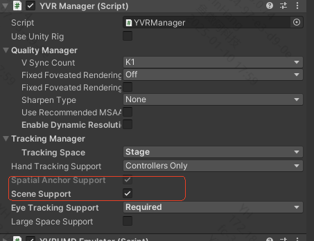

Spatial Mesh
Overview
Spatial meshes are used to represent and understand the three-dimensional structure of the physical environment. They typically consist of a series of polygons (usually triangles) that together form a 3D mesh to describe objects and surfaces in the real world. In Unity, you can access the XRMeshSubsystem to obtain and update mesh information, and dynamically generate and update mesh objects in the scene.
How to Enable Spatial Mesh
YVR implements the UnityXR XRMeshSubsystem interface. For more details, refer to the Unity XRMeshSubsystem documentation.
Enable the corresponding scene feature.
Check the scene Support feature

Request the corresponding scene permission
public void ScenePermissionRequest() { const string spatialPermission = "com.yvr.permission.USE_SCENE"; if (!UnityEngine.Android.Permission.HasUserAuthorizedPermission(spatialPermission)) { var callbacks = new UnityEngine.Android.PermissionCallbacks(); callbacks.PermissionDenied += Denied; callbacks.PermissionGranted += Granted; UnityEngine.Android.Permission.RequestUserPermission(spatialPermission, callbacks); } } private void Denied(string permission) => Debug.Log($"{permission} Denied"); private void Granted(string permission) => Debug.Log($"{permission} Granted");Enable mesh detection
YVRMeshTracking.instance.CreateMeshDetector();Enable passthrough mode
YVRPlugin.Instance.SetPassthrough(true);Get the available
XRMeshSubsysteminstancevar meshSubsystems = new List<XRMeshSubsystem>(); SubsystemManager.GetInstances(meshSubsystems);
Get Spatial Mesh Update Information
- Get current mesh information
private static XRMeshSubsystem s_MeshSubsystem; private static List<MeshInfo> s_MeshInfos = new List<MeshInfo>(); private Dictionary<MeshId, MeshFilter> m_MeshIdToGo = new Dictionary<MeshId, MeshFilter>(); private void UpdateMeshInfos() { if (s_MeshSubsystem == null) { Debug.LogError("s_MeshSubsystem is null"); return; } if (s_MeshSubsystem.TryGetMeshInfos(s_MeshInfos)) { foreach (var meshInfo in s_MeshInfos) { switch (meshInfo.ChangeState) { case MeshChangeState.Added: case MeshChangeState.Updated: AddToQueueIfNecessary(meshInfo); break; case MeshChangeState.Removed: if (m_MeshIdToGo.TryGetValue(meshInfo.MeshId, out var meshGo)) { Destroy(meshGo); m_MeshIdToGo.Remove(meshInfo.MeshId); } break; default: break; } } } }
Update Mesh Block Position and Rotation
Update the position and rotation of mesh objects
private void UpdateMeshTransform() { NativeArray<MeshTransform> meshTransforms = s_MeshSubsystem.GetUpdatedMeshTransforms(Allocator.Temp); foreach (var item in meshTransforms) { if (m_MeshIdToGo.TryGetValue(item.MeshId, out MeshFilter meshFilter)) { if (meshFilter.transform.position != item.Position) { meshFilter.transform.position = item.Position; meshFilter.transform.rotation = item.Rotation; } } } }
Update Corresponding Mesh Block Data
If the mesh object does not exist, instantiate a new mesh object and add it to the dictionary.
If it exists, asynchronously generate the mesh and update its position and rotation.
public GameObject emptyMeshPrefab; public Transform target; private void AddToQueueIfNecessary(MeshInfo meshInfo) { if (!m_MeshIdToGo.TryGetValue(meshInfo.MeshId, out var meshFilter)) { meshFilter = Instantiate(emptyMeshPrefab, target, false).AddComponent<MeshFilter>(); m_MeshIdToGo[meshInfo.MeshId] = meshFilter; var mesh = meshFilter.mesh; s_MeshSubsystem.GenerateMeshAsync(meshInfo.MeshId, mesh, null, MeshVertexAttributes.None, (result) => { if (result.Status == MeshGenerationStatus.Success) { if (meshFilter.transform.position != result.Position) { meshFilter.transform.position = result.Position; meshFilter.transform.rotation = result.Rotation; } } }, MeshGenerationOptions.ConsumeTransform); }
How to Stop Mesh Detection
YVRMeshTracking.instance.DestroyMeshDetector();